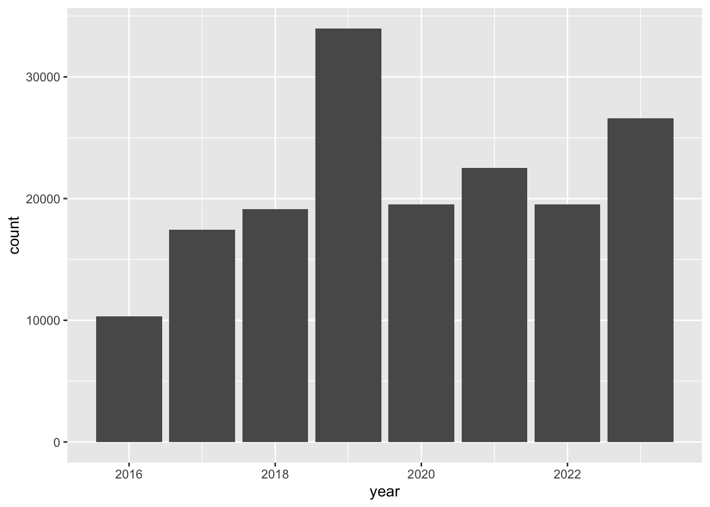

library(readr) # read and write tabular data
library(dplyr) # manipulate data
library(ggplot2) # create data visualizations
library(sf) # handle geospatial data
library(lubridate) # manipulate dates
library(mapview) # create interactive mapsIntroduction to Data Analysis
Questions
- How do we begin to analyze iNaturalist data?
Objectives
- Learn how to download data from iNaturalist
- Learn about the various ways to analyze data
iNaturalist data
When iNaturalist users add an observation through the iNaturalist app, that data is saved to the iNaturalist database. People can download the iNaturalist data as CSVs.
The iNaturalist CSV has information about:
- the user who made observation
- the location of the observation
- the observed species
- links for photos, videos, sounds
CSV comma-separated values
CSV is a text file format for tabular data. Each line represents one record. Each column represents a field. The fields are separated by commas. CSVs can be opened in text editors or spreadsheet programs.
CSV as plain text file.

CSV in CSV or spreadsheet application.

Downloading iNaturalist data
Here’s a video showing how to download iNaturalist data.
To save time and ensure everyone at the workshop has the same data, a CSV with data from iNaturalist City Nature Challenge Los Angeles from 2013 to 2024 is included in files download.
If you would like to download iNaturalist data for your own project, here’s more info.
https://help.inaturalist.org/en/support/solutions/articles/151000169670
Analyzing data
It is difficult for people to see any patterns when reading rows after row of text. To make it easier to see patterns, we can use software to analyze tabular data.
Spreadsheet programs are computer application that people can use to view, edit, and analyze tabular data. The programs can do calculations and create charts. Examples include Excel and Google Sheets
Geographic information system (GIS) are computer application that people can use to view, edit and analyze geographic data. The programs can do calculations and create maps. Some GIS programs can import CSVs if they have latitude and longitude fields. Examples include ArcGIS and QGIS.
Programming languages allow people to write instructions to tell a computer to do stuff. We can write code to do calculations, create charts, and create maps. Example programming languages include R, Python, C.
This class uses R because it is a popular language in ecology research and other types of scientific research.
Example of analyzing iNaturalist data using R
Here’s an overview of what we learn in this workshop.
Load software that will will need.
Load iNaturalist data from City Nature Challenge Los Angeles 2013-2023. There are over 169,000 observations.
inat <- read_csv("data/cleaned/cnc-los-angeles-observations.csv")Create summaries of the data. For instance, get the 10 most commonly observed ‘species’.
top_10 <- inat %>%
select(common_name, scientific_name) %>%
count(common_name, scientific_name, name='count') %>%
arrange(desc(count)) %>%
slice(1:10)
top_10| common_name | scientific_name | count |
|---|---|---|
| Western Fence Lizard | Sceloporus occidentalis | 2956 |
| dicots | Magnoliopsida | 1972 |
| Western Honey Bee | Apis mellifera | 1809 |
| plants | Plantae | 1655 |
| Fox Squirrel | Sciurus niger | 1305 |
| flowering plants | Angiospermae | 1141 |
| House Finch | Haemorhous mexicanus | 1120 |
| Mourning Dove | Zenaida macroura | 1067 |
| Convergent Lady Beetle | Hippodamia convergens | 839 |
| House Sparrow | Passer domesticus | 832 |
Create charts. For example, create a bar chart showing the number of observations per year.
inat %>%
mutate(year = year(observed_on)) %>%
group_by(year) %>%
ggplot(aes(x = year)) +
geom_bar()
Create maps. For example, create a map showing all the observations for Western Fence Lizard
lizard <- inat %>%
st_as_sf(coords = c("longitude", "latitude"), crs = 4326, remove=FALSE) %>%
select(id, user_login, common_name, scientific_name, observed_on, url, longitude, latitude, geometry) %>%
filter(common_name == 'Western Fence Lizard')
mapview(lizard)